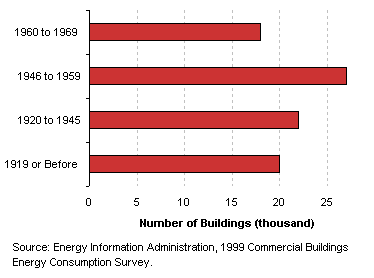

| |
|
Characteristics
by Activity...
Vacant |
Vacant
buildings are those in which more floorspace was vacant than was used for
any single commercial activity at the time of the interview, so it is possible
for a vacant building to have some occupied floorspace.
Basic Characteristics
[ See also: Equipment | Activity
Subcategories | Energy Use
]
| Vacant
Buildings...
- Vacant buildings tended to be small—sixty
percent were between 1,001 and 5,000 square feet.
- Vacant buildings tended to be old, with 87 percent
constructed before 1969.
Tables:
Top
|
|
Number
of Vacant Buildings by Predominant Building Size Categories
Number of
Vacant Buildings by Predominant Year Constructed Categories |
Equipment
Because there was a limited amount of energy-related
equipment used in vacant buildings, only the following facts are statistically
significant:
- 15 percent of vacant buildings used furnaces
- 14 percent used fluorescent lighting
- 17 percent had a centralized water heating system
- 12 percent had FAX machines
- 99 percent did not have any commercial refrigeration
- 89 percent did not contain any personal computers
- 94 percent did not contain any photocopiers
Top
Activity
Subcategories
| There were
no subcategories collected for vacant buildings, but there were
two follow-up questions asked of building respondents who reported
that their building was vacant.
They were first
asked whether the vacant space was used (or intended to be used)
for either agricultural, industrial, manufacturing or residential
purposes. If so, the case was determined to be noncommercial and
was eliminated from the sample.
If not, they
were then asked if the building was completely vacant. Just
a little over half the vacant buildings were completely vacant.
By CBECS definitions, the building only has to be 75 percent vacant
to be considered a vacant building. |
|
Vacant
Buildings Buildings by Amount Vacant |
Top
Energy
Use
Vacant
buildings used 31 trillion Btu of total energy, which was 1 percent
of total energy consumption for all commercial buildings, though they
accounted for 3 percent of all commercial floorspace. Not surprisingly,
they had the lowest energy intensity of all commercial building types.
|
|
Since vacant buildings used so little energy, there was not enough
to break consumption out into any further categories.
Vacant buildings usde a total of 31 trillion Btu of major
fuels, which was an average of 121 million Btu per building,
16 thousand Btu per square foot, at an average cost of $11.79 per
million Btu.
They used a total of 3 billion kWh of electricity,
which was an average of 25 thousand kWh per building, 2.7 kWh per
square foot, at an average cost of $8.73 per hundred kWh.
And, they used a total of 19 billion cubic feet of natural
gas, which was an average of 275 thousand cubic feet per
building, 29.9 cubic feet per square foot, at an average cost of
$475 per thousand cubic feet.
|
|
Energy Consumption in Vacant Buildings by Energy Source
Reference: What is a Btu?
|
The total energy consumption data in the figures above are “site
energy,” which includes only the amount of electricity consumed
within the building; energy use can also be expressed as “primary
energy,” which includes the energy consumed during the generation
and transmission of electricity. Vacant
buildings used 31 trillion Btu of primary electricity, so their total
primary energy consumption was 52 trillion Btu, or less than 1 percent
of total primary consumption for all commercial buildings.
Top
Specific questions may be directed to:
Joelle Michaels
joelle.michaels@eia.doe.gov
CBECS Manager
Release date: July 24, 2002
Page last modified:
May 4, 2009 2:52 PM
http://www.eia.gov/consumption/commercial/data/archive/cbecs/pba99/vacant/vacant.html
If you are having any technical problems with this
site, please contact the EIA webmaster at wmaster@eia.doe.gov. |